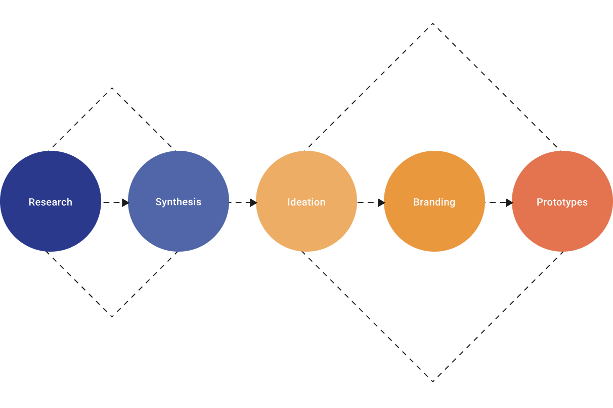

Fast Finder
Also known as Faculty and Staff Finder, is an application developed to help students of STI College Cubao find faculty and staff employees inside their campus.
This project was awarded the Best IT Special Project (Thesis) in April 2018.

ROLE
- User research, User Flows,
- User Interface Design,
- Wireframing, Prototyping,
- Front-end Development
TEAM
- Emille Juliene Armentia
- Jethro Peñaloza
- Jhonel Gayramara
- John Medel Mirafuentes
PROJECT DATE
October 2017
(1 Year)
THE PROBLEM
Where Are They?
We noticed that students are having a hard time looking for their professors. As students who are also experiencing this, especially when we have school-related concerns, my team and I had an idea to develop a solution to alleviate this issue.
We decided to take this opportunity to turn that idea into our final thesis project.

DESIGN PROCESS
Discover, Define, Develop, and Deliver
We aim to build our application by incorporating the vital phases of the Double Diamond model. 
RESEARCH
Gathering the Data
My team and I have conducted several user interviews and surveys with students and employees. Our goal is to validate whether students are struggling with finding a specific faculty and staff employee within the campus. And also, to identify our target users' needs.

Interview Questions Asked:
- In the scenario of a student who needs their school-related concerns addressed, can you walk me through the journey of finding specific faculty or staff employees whom you or they need in this circumstance?
- What are the challenges you have encountered during this process?
- For employees, can you sight possible reasons why you are unable to attend a student who requires your presence right away?
- If we were to develop an application to help you find faculty or staff employees within our campus, what features do you think are necessary?
SYNTHESIS
The Next Step Is to Combine + Analyze.
After gathering all of the responses, we have created an affinity diagram to synthesize our findings and insights. The team was able to verify our problem statement with the following:

IDEATION
Developing the Solution
Our team used brainstorming methods such as rapid ideation and storyboarding to identify our
primary users and produce possible features of the application.

Then we deepened our understanding of the structure of our application by
creating
user flows
and low-fidelity wireframes. The sample diagram below shows the steps of a user logging-in,
navigating the application, and paging an employee.

BRANDING
Creating the Identity Design
Our team decided to align our application's brand identity with STI
College's existing theme.

PROTOTYPES
User Testing + Design Iterations
At this stage, I took the lead in developing an interactive prototype using HTML, CSS, and
Bootstrap Framework. We decided to go for a mobile-responsive web application since our research
shows that most of our users are smartphone users.

To ensure that our design is usable and useful, we asked several students and employees to evaluate our prototypes by doing a test run. Here is the list of feedback we have received:
- Students and employees find the application easy to navigate.
- Employees requested if they can send a response to pager notifications.
- Employees pointed out that it would be better if statuses change colors whenever updated.
- Program Heads suggested that we add the STI College's logo to the homepage.
HOW IT WORKS
The Users
Our application's primary users are the students and employees, while the school administrator is the one who manages the accounts, schedules, and other data in the application.
Searching for an Employee
Students can search for an employee they're looking for through the quick-search bar
found in
their dashboard or the application's directory.

Pager Feature
Whenever an employee's status is Available, students can use the pager feature to call the attention of the person they need. The employee will receive a notification once paged.
Live Monitoring
Employees inside the faculty or staff room will also be alerted through the application's
live
monitor. This feature can help reduce a student's wait time as employees can notify their
colleagues that a student is looking for them.

Responding to Pager Notifications
Employees can acknowledge pager notifications or send a custom response if the situation
calls for it.

Automated Status Updates
An employee's location is automatically updated whenever they tap their IDs on the
school's
turnstiles. Their status is also updated whenever they have classes.

Manual Status Updates
In some situations, employees will be attending meetings, be busy doing other tasks, or
accidentally forget their IDs at home. Our application allows an employee to manually
update
their status so students can still get real-time updates.

OUTCOME & TAKEAWAYS
Measure of Success + Realizations
My teammates and I successfully defended our thesis project in October 2017 with minor revisions. The developed application was later deployed in STI College Cubao in February 2018 and won the Best IT Special (Thesis) Project.
As for my first time designing an application, here are my key takeaways from this experience:
- Design is a data-driven process. Therefore, it is important to validate all assumptions first before jumping into the visual design or writing any line of code.
- Reiteration helped us see what design opportunities we may have missed. This process made our design more aligned with our end-users needs.